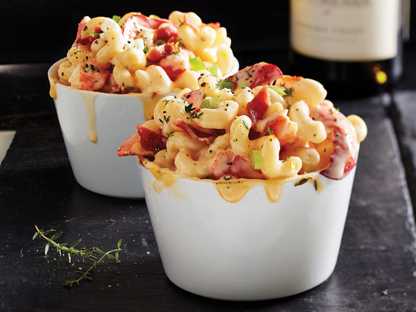

Lobster Mac and Cheese

Our favorite dish from Portland, Maine
Credits to
allrecipes
Ingredients:
- Macaroni
- 2 Pound Lobster
- Butter
- Vegetables: an onion and a shallot
- Milk
- Seasonings: salt, black peppercorns, and a clove of fresh garlic
- Flour
- Cheeses: Gruyere, Cheddar, and Romano
- Panko Bread Crumbs
Steps:
- Cook the macaroni in salted water
- Cook the lobster in the pasta water. Cut the meat into pieces and reserve the shells.
- Cook the onions in butter, then set aside.
- Add the shells, milk, shallot, peppercorns, and garlic to the pan and bring to a simmer.
- Make a roux, then whisk into the (strained) milk mixture. Cook until thick.
- Stir in the cheeses and season. Stir in the meat, onions, and noodles.
- Pour the mixture into a prepared casserole dish and top with Panko crumbs.
- Bake until the sauce is bubbly and the top is brown.